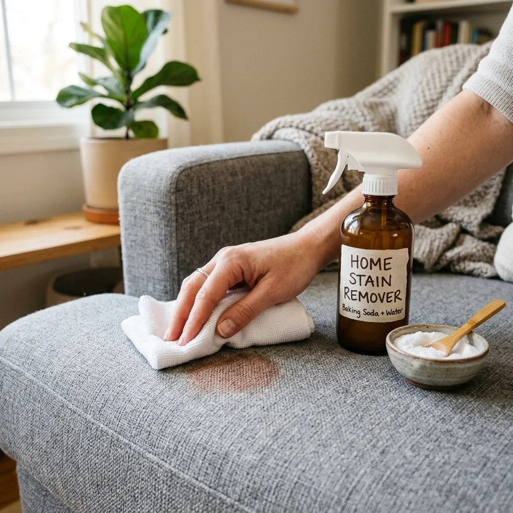

TRUCOS CASEROS

5 Mayo, 2026
Cómo quitar manchas de café con lo que tienes en la cocina
¿Se ha derramado café? No necesitas máquinas. Mezcla una parte de vinagre blanco con dos de agua y un chorrito de lavavajillas. Aplica con un paño dando toques suaves y verás cómo la mancha desaparece sin dañar el tejido.